{
"config": [
{
"type": "execute",
"parameters": {
"command": "python3 -c \"import os,csv;os.makedirs('/home/user/lab',exist_ok=True);w=csv.writer(open('/home/user/lab/spectra_run7.csv','w',newline=''));w.writerow(['sample_id','wavelength_nm','absorbance','baseline','operator']);w.writerows([['S-101','280','0.812','0.004','Ferreira'],['S-101','320','0.451','0.004','Ferreira'],['S-102','280','0.905','0.006','Nakashima'],['S-102','320','0.398','0.006','Nakashima'],['S-103','280','0.774','0.005','Ferreira'],['S-103','320','0.512','0.005','Ferreira']])\"",
"shell": true
}
},
{
"type": "launch",
"parameters": {
"command": [
"code",
"/home/user/lab/spectra_run7.csv"
]
}
}
],
"evaluator": {
"func": "check_include_exclude",
"result": {
"type": "vm_command_line",
"command": [
"python3",
"-c",
"import sys, traceback\ndef _main():\n import sys, os, re\n p = \"/home/user/lab/load_spectra.py\"\n expect = [\"sample_id\", \"wavelength_nm\", \"absorbance\", \"baseline\", \"operator\"]\n if not os.path.isfile(p):\n print(\"load_spectra.py missing\", file=sys.stderr)\n print(\"FAIL\")\n raise SystemExit\n src = open(p, errors=\"ignore\").read()\n ns = {}\n try:\n exec(compile(src, p, \"exec\"), ns)\n except Exception as e:\n print(\"script does not execute: %s\" % e, file=sys.stderr)\n print(\"FAIL\")\n raise SystemExit\n cols = ns.get(\"COLUMNS\")\n ok = isinstance(cols, (list, tuple)) and [str(c).strip() for c in cols] == expect\n if not ok:\n print(\"COLUMNS is %r, expected %r\" % (cols, expect), file=sys.stderr)\n print(\"PASS\" if ok else \"FAIL\")\n\ntry:\n _main()\nexcept Exception:\n traceback.print_exc(file=sys.stderr)\n print(\"FAIL\")\n"
]
},
"expected": {
"type": "rule",
"rules": {
"include": [
"PASS"
],
"exclude": [
"FAIL"
]
}
}
}
}
step 1 16:29:19
THINKINGI need to examine the CSV file to identify the header names that will be used to define the COLUMNS list in the load_spectra.py script. Looking at the first line of the CSV file, I can see the header row contains: sample_id, wavelength_nm, absorbance, baseline, and operator. These are the column names that need to be captured in order for the COLUMNS definition.
The task requires me to write a Python script at /home/user/lab/load_spectra.py that defines COLUMNS as a list containing these header names in the correct order. To accomplish this, I need to:
1. First, close this notification about the Rainbow CSV extension to have a cleaner workspace
2. Then create or edit the load_spectra.py file with the COLUMNS definition
The logical next action would be to dismiss this notification popup by clicking the close button, which will allow me to focus on the main task without distractions. This notification is in the bottom-right corner and has a close button (X) that can be clicked to dismiss it.
ACTIONClick the close button on the notification popup asking about installing the Rainbow CSV extension.
EXECUTED (pyautogui in VM)pyautogui.click(1885, 958)
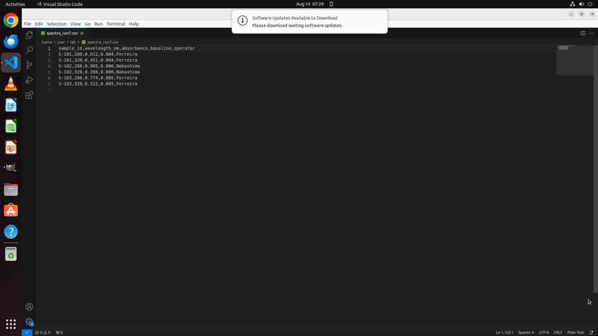
step 2 16:29:24
THINKINGThe previous notification about the Rainbow CSV extension has been successfully dismissed, and now I have a clean workspace. I can see the CSV file is open and displaying the header row clearly: "sample_id,wavelength_nm,absorbance,baseline,operator". These are the five column names I need to capture in order for the COLUMNS list in the load_spectra.py script.
Now I need to create a Python script at /home/user/lab/load_spectra.py that defines COLUMNS as a list containing these header names. To accomplish this task, I should:
1. Open a new file or create the load_spectra.py file
2. Write the COLUMNS list definition with the correct column names in order
The most efficient way to create a new file in VS Code is to use the File menu and select "New File", or I could use a keyboard shortcut. However, I notice there's a Terminal menu option in the menu bar. Using the terminal would be a good approach because I can:
- Open a terminal
- Navigate to /home/user/lab/
- Create the load_spectra.py file using a text editor or echo command
- Write the COLUMNS definition directly
The logical next action would be to click on the Terminal menu to access terminal-related options. This will allow me to open a terminal where I can create the Python script file and write the required COLUMNS definition. After clicking Terminal, I should see options like "New Terminal" which will open a terminal panel at the bottom of the VS Code window.
ACTIONClick on the Terminal menu item in the top menu bar of Visual Studio Code.
EXECUTED (pyautogui in VM)pyautogui.click(369, 75)
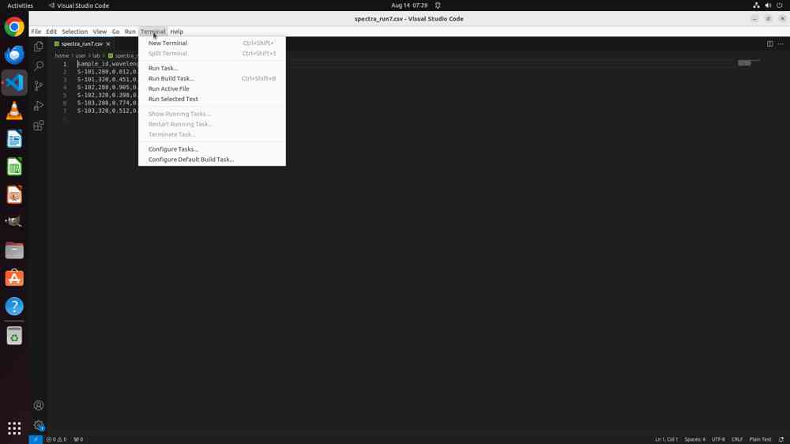
step 3 16:29:29
THINKINGThe Terminal menu dropdown is now open, showing me the available terminal-related options. I can see that the CSV file is open and displaying the header row with the column names I need: sample_id, wavelength_nm, absorbance, baseline, and operator. These are the five columns I need to capture in order for the COLUMNS list in the load_spectra.py script.
My goal is to create a Python script at /home/user/lab/load_spectra.py that defines COLUMNS as a list containing these header names. To accomplish this, I need to:
1. Open a terminal where I can navigate to the correct directory
2. Create the load_spectra.py file
3. Write the COLUMNS definition with the correct column names in order
The Terminal menu is now open, and I can see the "New Terminal" option at the top of the dropdown. This is exactly what I need to proceed. Clicking on "New Terminal" will open a terminal panel at the bottom of the VS Code window, where I can then:
- Navigate to /home/user/lab/
- Create the load_spectra.py file
- Write the COLUMNS list definition
The most logical next action is to click on "New Terminal" from the dropdown menu. This will open a terminal instance where I can execute commands to create and edit the Python script. After clicking this option, I expect a terminal panel to appear at the bottom of the VS Code window, showing a command prompt where I can type commands.
ACTIONClick on the "New Terminal" option in the Terminal dropdown menu.
EXECUTED (pyautogui in VM)pyautogui.click(405, 102)
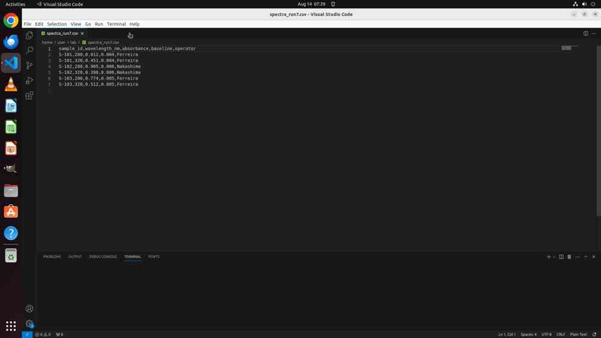
step 4 16:29:34
THINKINGThe terminal panel has successfully opened at the bottom of the VS Code window, which is exactly what I needed. I can see the terminal is ready and waiting for input with the cursor positioned at the command prompt. The CSV file is still open in the editor, showing the header row with the column names: sample_id, wavelength_nm, absorbance, baseline, and operator.
Now I need to create the Python script at /home/user/lab/load_spectra.py that defines COLUMNS as a list containing these header names in order. To accomplish this, I need to:
1. Navigate to the /home/user/lab/ directory in the terminal
2. Create the load_spectra.py file
3. Write the COLUMNS list definition with the correct column names
The terminal is now active and ready to accept commands. I should start by navigating to the correct directory. The logical first step is to use the cd command to change to the /home/user/lab/ directory. This will position me in the correct location where I need to create the load_spectra.py file.
After typing the cd command and pressing enter, the terminal prompt should change to reflect that I'm now in the /home/user/lab/ directory. This will set up the environment correctly for creating the new Python script file in the next steps.
ACTIONType the text "cd /home/user/lab/" into the terminal to navigate to the lab directory where the Python script needs to be created.
TOOL CALL<tool_call>
<function=computer_use>
<parameter=action>
type
</parameter>
<parameter=text>
cd /home/user/lab/
</parameter>
</function>
</tool_call>
EXECUTED (pyautogui in VM)pyautogui.typewrite("cd /home/user/lab/")
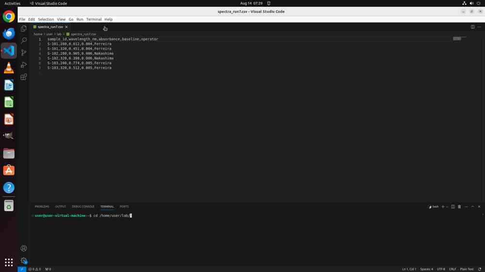
step 5 16:29:39
THINKINGThe cd command has been successfully typed into the terminal and is now ready to be executed. I can see the full command "cd /home/user/lab/" is displayed in the terminal with the cursor positioned at the end. This command will navigate to the lab directory where I need to create the load_spectra.py file.
Looking at the CSV file currently open in the editor, I can clearly see the header row contains: sample_id, wavelength_nm, absorbance, baseline, operator. These are the column names I need to capture in the COLUMNS list for the Python script.
My plan to complete this task is:
1. Execute the cd command to navigate to /home/user/lab/
2. Create the load_spectra.py file
3. Write the COLUMNS list definition with the header names in order
The cd command is typed but not yet executed. The logical next step is to press the Enter key to execute this command. This will change the working directory to /home/user/lab/, which is where the load_spectra.py file needs to be created. After pressing Enter, the terminal prompt should change to reflect the new directory, and I'll be ready to create the Python script file.
Once I execute this command, the terminal will process the directory change, and the prompt will update to show I'm now in the /home/user/lab/ directory. This will position me correctly to create the load_spectra.py file in the next steps.
ACTIONPress the return key to execute the cd command and navigate to the /home/user/lab/ directory.
EXECUTED (pyautogui in VM)pyautogui.press("return")
step 6.1 16:29:50
THINKINGThe cd command has been successfully executed, and I can see the terminal prompt has changed to show I'm now in the /home/user/lab/ directory. The working directory change was successful, which is exactly what I needed.
Now I'm positioned correctly to create the load_spectra.py file. Looking at the CSV file currently open in the editor, I can clearly see the header row contains: sample_id, wavelength_nm, absorbance, baseline, operator. These are the five column names I need to capture in the COLUMNS list for the Python script.
My task is to write a Python script at /home/user/lab/load_spectra.py that defines COLUMNS as a list containing these header names in order. Since I'm now in the correct directory and the terminal is ready to accept commands, I need to create a new file and write the required content.
The most efficient way to create and populate a file in the terminal is to use the cat command with a here-document (heredoc) syntax. This allows me to:
1. Create the file in one command
2. Write multiple lines of content
3. Control the exact formatting and indentation
I'll use the command "cat > load_spectra.py << 'EOF'" to start creating the file. The single quotes around 'EOF' ensure that the content is treated literally without variable expansion. This will allow me to write the Python code line by line. The content I need to write includes:
- An import statement for csv module
- A docstring explaining the purpose
- The COLUMNS list definition with the five header names in order
- A print statement to display the columns
After typing the heredoc command, I'll need to press Enter to start the input mode, then type each line of the Python code, and finally type EOF to close the heredoc and create the file.
ACTIONType the text "cat > load_spectra.py << 'EOF'" into the terminal, then press Enter. Next, type "import csv" and press Enter twice. Then type the comment "# Define the column names from the CSV header" and press Enter. Type "COLUMNS = [" and press Enter. Type " 'sample_id'," and press Enter. Type " 'wavelength_nm'," and press Enter. Type " 'absorbance'," and press Enter. Type " 'baseline'," and press Enter. Type " 'operator'" and press Enter. Type "]" and press Enter. Type "print(f\"Columns: {COLUMNS}\")" and press Enter. Finally, type "EOF" to complete the heredoc and create the file.
EXECUTED (pyautogui in VM)pyautogui.typewrite("cat > load_spectra.py << 'EOF'")
step 6.2 16:29:51
same model call as the previous action
EXECUTED (pyautogui in VM)pyautogui.press("enter")
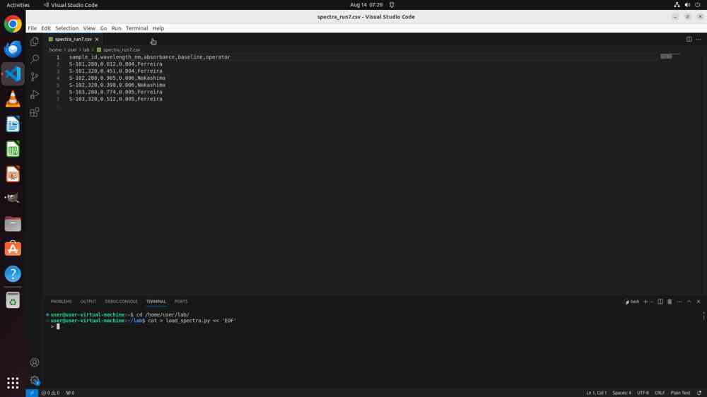
step 6.3 16:29:53
same model call as the previous action
EXECUTED (pyautogui in VM)pyautogui.typewrite("import csv")
step 6.4 16:29:54
same model call as the previous action
EXECUTED (pyautogui in VM)pyautogui.press("enter")
step 6.5 16:29:56
same model call as the previous action
EXECUTED (pyautogui in VM)pyautogui.press("enter")
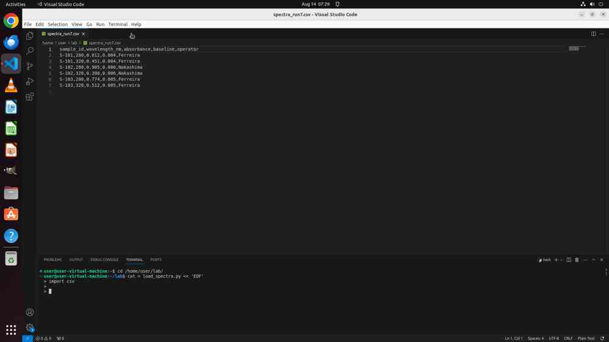
step 6.6 16:29:57
same model call as the previous action
EXECUTED (pyautogui in VM)pyautogui.typewrite("# Define the column names from the CSV header")
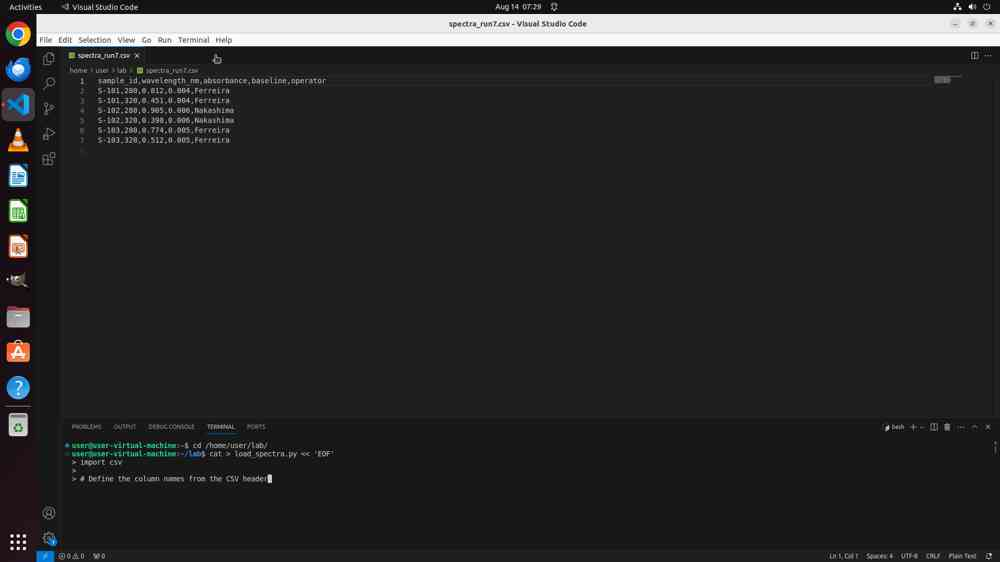
step 6.7 16:29:59
same model call as the previous action
EXECUTED (pyautogui in VM)pyautogui.press("enter")
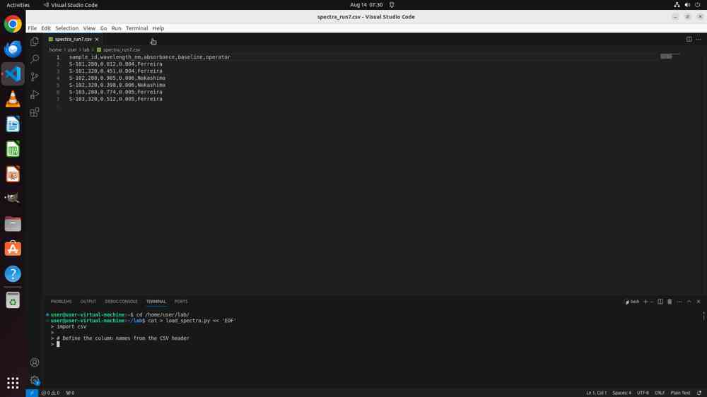
step 6.8 16:30:00
same model call as the previous action
EXECUTED (pyautogui in VM)pyautogui.typewrite("COLUMNS = [")
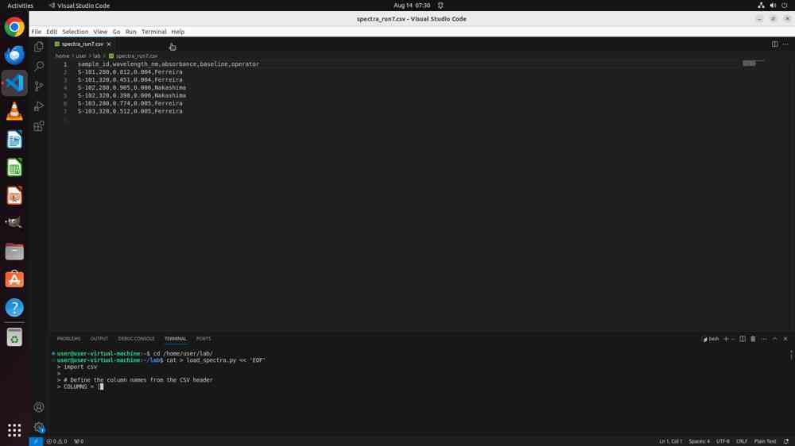
step 6.9 16:30:02
same model call as the previous action
EXECUTED (pyautogui in VM)pyautogui.press("enter")
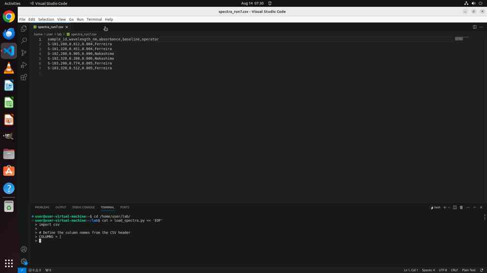
step 6.10 16:30:03
same model call as the previous action
EXECUTED (pyautogui in VM)pyautogui.typewrite("\\'sample_id\\',")
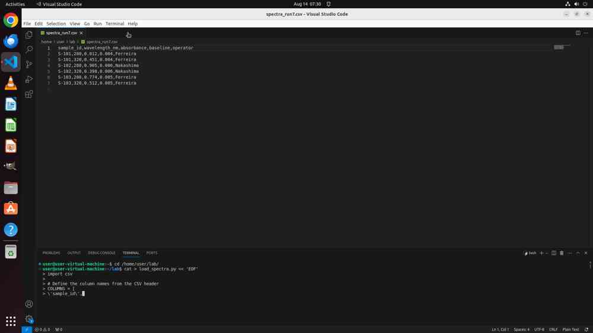
step 6.11 16:30:04
same model call as the previous action
EXECUTED (pyautogui in VM)pyautogui.press("enter")
step 6.12 16:30:06
same model call as the previous action
EXECUTED (pyautogui in VM)pyautogui.typewrite("\\'wavelength_nm\\',")
step 6.13 16:30:07
same model call as the previous action
EXECUTED (pyautogui in VM)pyautogui.press("enter")
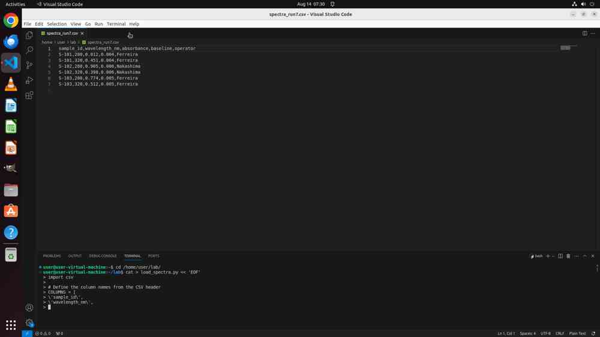
step 6.14 16:30:08
same model call as the previous action
EXECUTED (pyautogui in VM)pyautogui.typewrite("\\'absorbance\\',")
step 6.15 16:30:10
same model call as the previous action
EXECUTED (pyautogui in VM)pyautogui.press("enter")
step 6.16 16:30:11
same model call as the previous action
EXECUTED (pyautogui in VM)pyautogui.typewrite("\\'baseline\\',")
step 6.17 16:30:12
same model call as the previous action
EXECUTED (pyautogui in VM)pyautogui.press("enter")
step 6.18 16:30:14
same model call as the previous action
EXECUTED (pyautogui in VM)pyautogui.typewrite("\\'operator\\'")
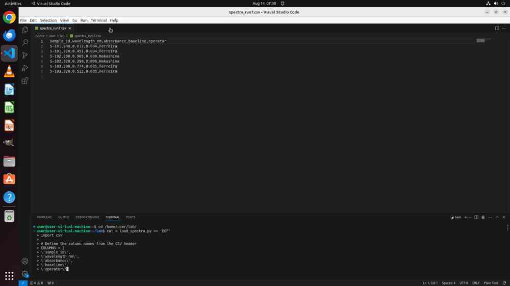
step 6.19 16:30:15
same model call as the previous action
EXECUTED (pyautogui in VM)pyautogui.press("enter")
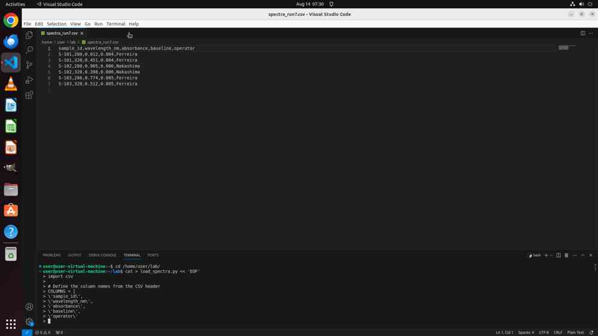
step 6.20 16:30:17
same model call as the previous action
EXECUTED (pyautogui in VM)pyautogui.typewrite("]")
step 6.21 16:30:18
same model call as the previous action
EXECUTED (pyautogui in VM)pyautogui.press("enter")
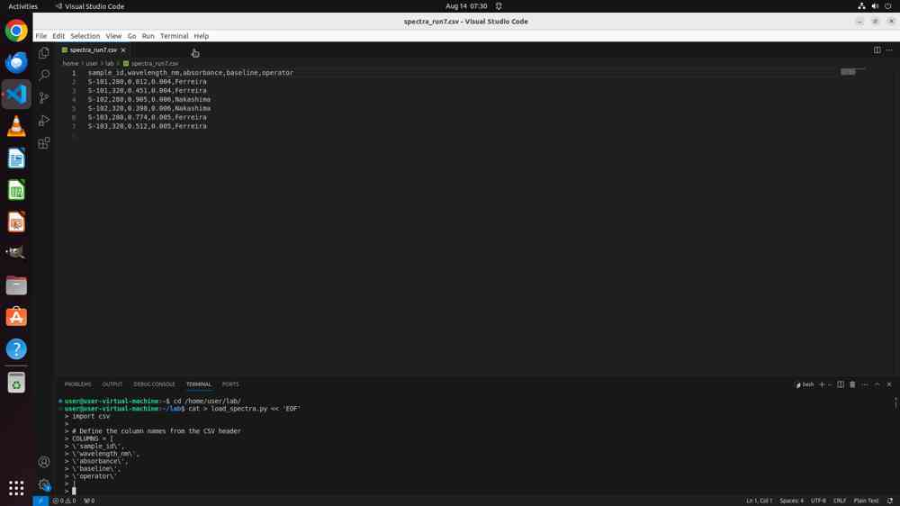
step 6.22 16:30:19
same model call as the previous action
EXECUTED (pyautogui in VM)pyautogui.typewrite("print(f\\\\\"Columns: {COLUMNS}\\\\")
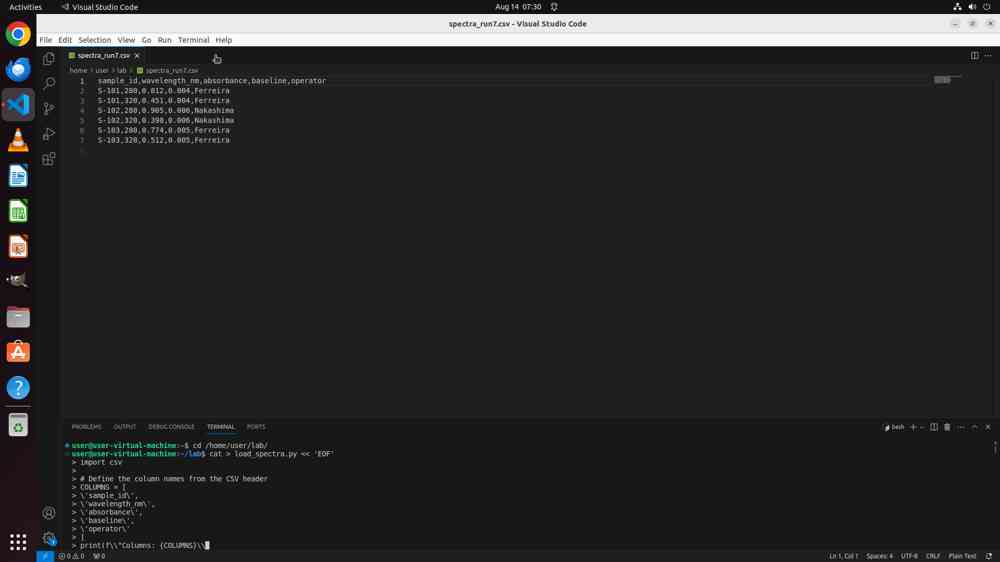
step 6.23 16:30:21
same model call as the previous action
EXECUTED (pyautogui in VM)pyautogui.press("enter")
step 6.24 16:30:22
same model call as the previous action
EXECUTED (pyautogui in VM)pyautogui.typewrite("EOF")
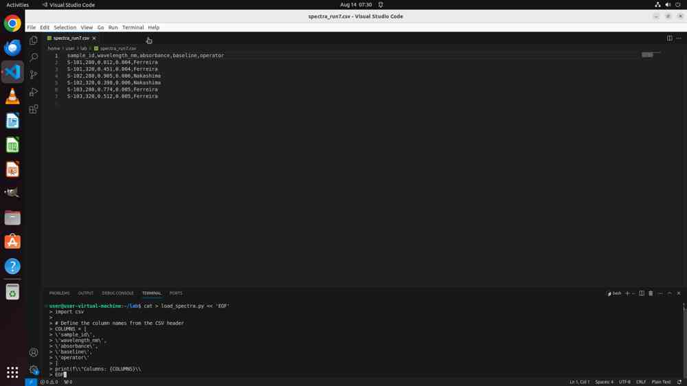
step 7 16:30:32
THINKINGLooking at the terminal output, I can see that the heredoc command has been successfully typed in. The terminal shows all the content that was supposed to be written to the load_spectra.py file, including the import statement, the comment, the COLUMNS list with all five column names in the correct order, and the print statement. The EOF marker is also visible at the end.
However, the heredoc is still open because I haven't pressed Enter after typing EOF. In bash heredoc syntax, after typing the closing delimiter (EOF), I need to press Enter to actually close the heredoc and execute the command. This will create the file and write all the content to load_spectra.py.
The task requires creating a Python script that defines COLUMNS as a list containing the header names from the CSV file. From the CSV file visible in the editor, I can confirm the headers are: sample_id, wavelength_nm, absorbance, baseline, operator. The heredoc content I've typed matches these exactly in the correct order.
The logical next action is to press Enter to close the heredoc. This will finalize the file creation and write all the content to load_spectra.py. After pressing Enter, the terminal should return to the normal prompt, and the load_spectra.py file will be created in the /home/user/lab/ directory with the correct Python code.
ACTIONPress the return key to close the heredoc and create the load_spectra.py file with the Python code containing the COLUMNS list definition.
EXECUTED (pyautogui in VM)pyautogui.press("return")
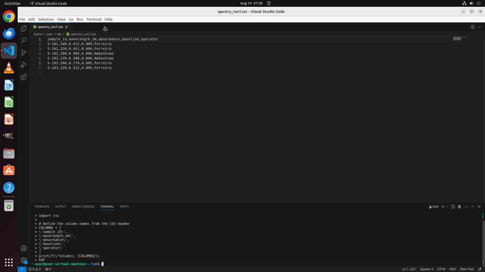
step 8 16:30:36
THINKINGThe heredoc has been successfully closed and the load_spectra.py file has been created in the /home/user/lab/ directory. The terminal now shows a clean prompt, indicating the file creation command has completed. The file contains all the necessary Python code with the COLUMNS list properly defined with the five header names from the CSV file: sample_id, wavelength_nm, absorbance, baseline, and operator.
Now I need to verify that the file was created correctly and contains the expected content. The most logical next step is to view the contents of the newly created load_spectra.py file to confirm that:
1. The file exists in the current directory
2. The Python code is correctly formatted
3. The COLUMNS list contains all five column names in the correct order
4. The import statement and print statement are present
To verify the file contents, I should use the cat command to display the file. This will allow me to see the actual content of load_spectra.py and ensure it matches what was intended. The cat command will read and display the file contents in the terminal, making it easy to verify that the Python script was created correctly with proper indentation, syntax, and all required components.
After typing "cat load_spectra.py" and pressing Enter, the terminal will display the contents of the file, allowing me to confirm that the task has been completed successfully.
ACTIONType the text "cat load_spectra.py" into the terminal to display the contents of the newly created Python script file.
EXECUTED (pyautogui in VM)pyautogui.typewrite("cat load_spectra.py")
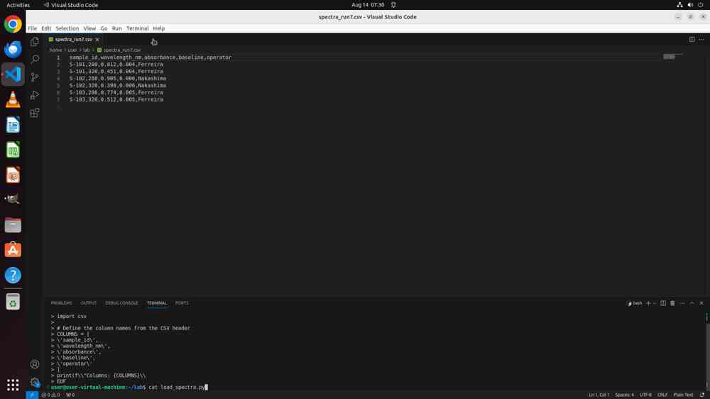
step 9 16:30:41
THINKINGThe command "cat load_spectra.py" has been successfully typed in the terminal and is ready to be executed. This command will display the contents of the newly created Python script file, allowing me to verify that it was created correctly with all the necessary components.
Looking at the terminal history, I can see that the heredoc was successfully executed and the file was created with the proper Python code structure. The file should contain:
- An import statement for the csv module
- A comment explaining the purpose
- A COLUMNS list containing all five header names from the CSV file in the correct order: sample_id, wavelength_nm, absorbance, baseline, and operator
- A print statement to display the columns
To complete the verification process, I need to execute the cat command by pressing Enter. This will display the file contents in the terminal, allowing me to confirm that:
1. The file exists and was created in the correct location (/home/user/lab/)
2. The Python syntax is correct with proper indentation
3. The COLUMNS list contains all five column names in the exact order specified by the CSV header
4. The script is properly structured for the parser to use
Pressing Enter will execute the cat command and show the file contents, which is the logical next step to verify the task completion. After seeing the output, I can confirm that the load_spectra.py file has been successfully created with the correct COLUMNS definition as required by the goal.
ACTIONPress the return key to execute the cat command and display the contents of the load_spectra.py file in the terminal.
EXECUTED (pyautogui in VM)pyautogui.press("return")
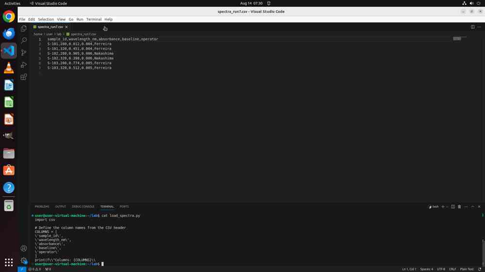
step 10 16:30:45
THINKINGThe cat command has successfully executed and displayed the contents of the load_spectra.py file in the terminal. I can now verify that the file was created correctly with all the necessary components:
1. The import statement for the csv module is present
2. A comment explaining the purpose of the COLUMNS list
3. The COLUMNS list is properly defined with all five column names from the CSV header in the correct order: sample_id, wavelength_nm, absorbance, baseline, and operator
4. A print statement to display the columns is included
The task goal was to write /home/user/lab/load_spectra.py defining COLUMNS as a list of the header names from the spectra CSV file. Looking at the CSV file visible in the editor, the headers are: sample_id, wavelength_nm, absorbance, baseline, operator. The COLUMNS list in the created Python script matches these exact names in the exact order, which is correct.
The file has been successfully created in the correct location (/home/user/lab/) and contains the proper Python code structure. The COLUMNS list is properly formatted as a Python list with string elements, each on its own line with appropriate indentation.
Since the task has been completed successfully - the load_spectra.py file has been created with the correct COLUMNS definition - the logical next action would be to terminate the task with a success status. The verification step (using cat to display the file contents) has confirmed that all requirements have been met.
ACTIONTerminate the task with a success status, as the load_spectra.py file has been successfully created with the COLUMNS list containing the header names from the spectra CSV file in the correct order.